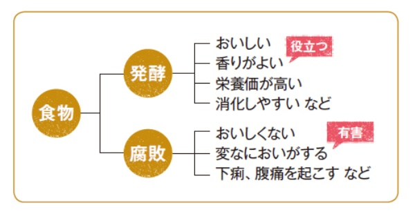
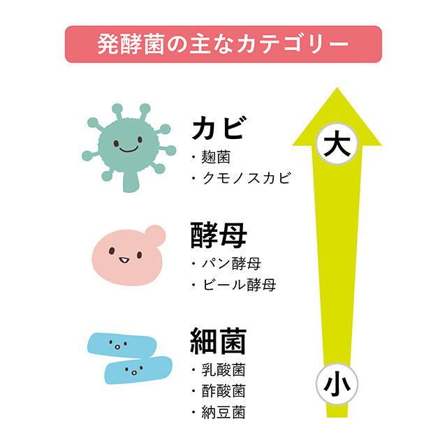
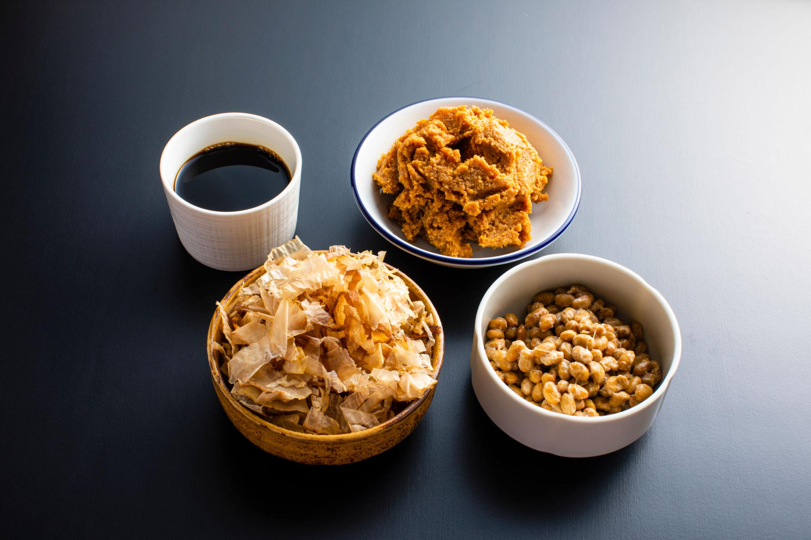
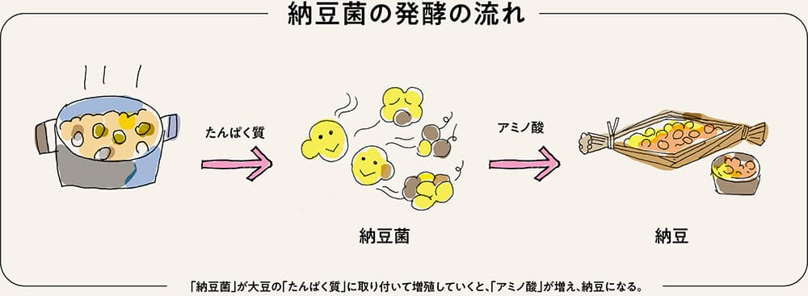

発酵の科学：微生物が作る日本の食べ物
book39の中学年版
みなさんは、納豆や味噌、醤油、日本酒がどうやって作られるか考えたことがあるでしょうか。これらの食べ物は、ただ置いておけばできるわけではありません。目に見えない小さな生き物、つまり微生物がはたらくことで生まれます。
このブログでは、日本の食文化を支えてきた「発酵」を、理科の目でわかりやすく見ていきます。公開1回目では、まず土台となる3つのテーマ、発酵とは何か、微生物の種類、発酵の化学を学びます。
第1章 発酵とは何か
1-1 発酵は「微生物のはたらき」
発酵とは、微生物が自分で生きるために原料を変化させることです。酵母は糖を分解してアルコールを作り、乳酸菌は糖から乳酸を作ります。つまり発酵は、ただ食べ物が変わる現象ではなく、微生物がエネルギーを得るための代謝反応なのです。
1-2 代謝とは何か
代謝とは、生物が体の中で物質をつくりかえたり、分解したりするはたらきです。人間も食べ物を分解してエネルギーを得ますが、微生物も同じように代謝をしています。ただし微生物は、人間にはできない特別な変化を起こせます。たとえば米や大豆を、酒や味噌のもとに変えてしまうのです。
1-3 発酵と腐敗のちがい
発酵と腐敗は、どちらも微生物が物質を変化させる現象です。では何がちがうのでしょうか。人間にとって役に立つ変化なら発酵、食べられなくなったり有害になったりする変化なら腐敗と呼びます。
| 現象 | 意味 | 人間から見た結果 |
|---|---|---|
| 発酵 | 微生物が原料を変化させる | おいしい、保存しやすい、役に立つ |
| 腐敗 | 微生物が原料を変化させる | くさい、有害、食べられない |
つまり、発酵と腐敗は仕組みそのものが全く別なのではありません。人間にとって良いか悪いかで名前が変わるのです。

1-4 発酵はエネルギー反応
微生物は、原料の中にふくまれる糖やたんぱく質を分解し、そのときに得られるエネルギーで生きています。このため発酵は、料理というよりも、まず生物のエネルギー反応として理解するのが理科的です。
第2章 微生物の種類
発酵にかかわる微生物は、全部同じではありません。見た目もはたらきも、それぞれ大きくちがいます。ここでは中学理科で押さえたい4つを見ていきます。
| 種類 | 例 | 特ちょう | 主なはたらき |
|---|---|---|---|
| カビ | 麹菌 | 糸のように広がる真菌 | デンプンやたんぱく質を分解する |
| 酵母 | 酒酵母 | 単細胞の真菌 | 糖からアルコールを作る |
| 細菌 | 納豆菌 | とても小さい細胞 | 大豆を分解し、ねばりを作る |
| 乳酸菌 | 味噌・醤油に関わる菌 | 酸を作る細菌 | 乳酸を作り、雑菌をふせぐ |
2-1 カビ：麹菌
「カビ」と聞くと悪いものを想像しがちですが、発酵の世界では役立つカビがいます。それが麹菌です。麹菌は米や麦、大豆の表面で育ち、デンプンを糖に、たんぱく質をアミノ酸に変える酵素を出します。味噌、醤油、日本酒の土台になる、日本の発酵文化の中心選手です。
2-2 酵母：酒を生み出す微生物
酵母は真菌のなかまですが、カビのように糸をのばさず、1つ1つの細胞として生きています。酵母は糖を食べてアルコールと二酸化炭素を作ります。日本酒だけでなく、パンづくりでも活躍しています。
2-3 細菌：納豆菌
納豆菌は細菌の一種です。大豆のたんぱく質を分解し、納豆らしい香りや味、ねばねばを作ります。納豆菌は空気がある場所を好み、強くて生き残りやすいことも特徴です。
2-4 乳酸菌：目立たないけれど重要
乳酸菌は糖から乳酸を作る細菌です。味噌や醤油、日本酒の一部の工程では、乳酸菌が酸を作って雑菌をふせぎ、発酵を安定させます。主役ではないこともありますが、名わき役としてとても大切です。

第3章 発酵の化学
発酵は生物だけの話ではありません。実は、発酵の中ではいろいろな化学変化が起きています。ここでは中学生にもわかる形で、3つの代表的な変化を見ていきましょう。
3-1 糖 → アルコール
酵母は糖を分解して、アルコールと二酸化炭素を作ります。これをアルコール発酵といいます。日本酒では、麹菌が米のデンプンをまず糖にし、その糖を酵母がアルコールへ変えます。
3-2 糖 → 乳酸
乳酸菌は糖を分解して、乳酸を作ります。乳酸が増えると、周りはすっぱくなります。この酸性の環境では、ふつうの雑菌が増えにくくなるため、発酵が安定します。ヨーグルトや漬物の酸味も、このしくみで生まれます。
3-3 たんぱく質 → アミノ酸
麹菌や納豆菌は、たんぱく質を細かく分解してアミノ酸を作ります。アミノ酸は、味噌や醤油のうま味のもとです。つまり発酵は、ただ保存のためだけではなく、おいしさを生み出す化学変化でもあります。
| 変化 | 主に働く微生物 | 生まれるもの | 例 |
|---|---|---|---|
| 糖 → アルコール | 酵母 | アルコール、炭酸ガス | 日本酒、パン |
| 糖 → 乳酸 | 乳酸菌 | 乳酸 | 味噌、漬物、ヨーグルト |
| たんぱく質 → アミノ酸 | 麹菌、納豆菌 | うま味成分 | 味噌、醤油、納豆 |
3-4 日本酒の特別なしくみ
世界の多くのお酒では、「デンプンを糖にする段階」と「糖をアルコールにする段階」が分かれています。ところが日本酒では、麹菌による糖化と酵母による発酵が同時に進みます。これを並行複発酵といい、日本酒の大きな特徴です。
第１章～第３章では、発酵のしくみそのものを学びました。第4章～第6章で、いよいよ、納豆・味噌・醤油・日本酒という日本の代表的な発酵食品を見ていきます。そして、それぞれがどんな発酵タイプにあたるのか、さらに歴史の中でどう発展してきたのかを考えます。
第4章 日本の発酵食品
ここで初めて、具体的な食品が登場します。同じ「発酵食品」でも、原料も微生物もでき方も少しずつちがいます。
4-1 納豆
納豆は、蒸した大豆に納豆菌をはたらかせて作ります。納豆菌は大豆のたんぱく質を分解し、うま味を出します。また、ねばねばした成分も作ります。納豆は見た目が強烈ですが、微生物のはたらきをそのまま感じやすい食品です。
4-2 味噌
味噌は、大豆に麹と塩を加え、長い時間をかけて熟成させて作ります。麹菌が原料を分解し、そのあと乳酸菌や酵母が加わって味や香りを整えます。味噌には米味噌、麦味噌、豆味噌などがあり、地域によって個性が大きくちがいます。
4-3 醤油
醤油は、大豆と小麦に麹菌をつけて「醤油麹」を作り、それを塩水の中で発酵・熟成させて作ります。麹菌、乳酸菌、酵母が順に活躍し、色・香り・うま味が生まれます。醤油は液体の調味料ですが、その中には複雑な発酵のしくみがつまっています。
4-4 日本酒
日本酒は、米と水、麹菌、酵母を使って作られます。麹菌が米のデンプンを糖に変え、酵母がその糖をアルコールに変えます。この2つが同時に進むのが、日本酒ならではの特徴です。
| 食品 | 主な原料 | 主に働く微生物 | できるもの |
|---|---|---|---|
| 納豆 | 大豆 | 納豆菌 | ねばり、うま味 |
| 味噌 | 大豆、麹、塩 | 麹菌、乳酸菌、酵母 | うま味、香り、保存性 |
| 醤油 | 大豆、小麦、塩 | 麹菌、乳酸菌、酵母 | 液体のうま味調味料 |
| 日本酒 | 米、水 | 麹菌、酵母 | アルコール飲料 |

第5章 発酵のタイプ
発酵食品を理科として理解するには、「どの微生物が、どんな組み合わせで働いているか」を見るのが大切です。
| 食品 | 発酵 | 意味 |
|---|---|---|
| 納豆 | 細菌発酵 | 細菌である納豆菌が主役 |
| 味噌 | 多菌発酵 | 麹菌・乳酸菌・酵母が協力する |
| 醤油 | 複合発酵 | 複数の微生物が段階的に働く |
| 日本酒 | 並行複発酵 | 糖化とアルコール発酵が同時に進む |

5-1 納豆：細菌発酵
納豆は、細菌である納豆菌が主役です。1種類のはたらきが前面に出るので、基本が見えやすい発酵といえます。
5-2 味噌：多菌発酵
味噌では、まず麹菌が原料を分解し、そこに乳酸菌や酵母が加わって複雑な味を作ります。1つの食品の中に、何種類もの微生物の仕事があるのです。
5-3 醤油：複合発酵
醤油も複数の微生物がかかわりますが、味噌以上に液体の中で変化が積み重なり、香りや色まで大きく変わります。醤油はまさに「時間をかけて作る化学工場」です。
5-4 日本酒：並行複発酵
日本酒では、麹菌が糖を作る仕事と、酵母がアルコールを作る仕事が同時進行します。世界でも珍しい仕組みで、日本の発酵技術の高さを示す代表例です。
第6章 発酵の歴史
発酵食品は、理科の教科書だけの話ではありません。人間の暮らしの歴史と深く結びついています。
6-1 稲作と発酵
日本で米作りが広がると、米を保存したり利用したりする工夫が進みました。その中から、酒づくりも発達していきました。発酵は、農業の発展とともに広がった技術です。
6-2 寺院と発酵
昔は、寺院が学問や技術の中心でもありました。味噌や酒づくりの技術も、寺や大きな組織の中で磨かれたと考えられています。発酵は、宗教や文化ともつながっていました。
6-3 武士と保存食
戦の時代には、長く保存できる食べ物が必要でした。味噌は兵糧として重要で、栄養があり保存しやすい食品として武士の生活を支えました。
6-4 江戸の技術革命
江戸時代になると、酒、味噌、醤油づくりの技術が大きく発展します。大量生産や品質の安定化が進み、発酵食品は庶民の暮らしの中に深く入りました。つまり発酵は、昔の人の知恵による生活技術の革命でもあったのです。

第8章～第9章では、発酵を「今の科学」と「未来の技術」という視点から見ていきます。昔から使われてきた発酵ですが、実は最先端のバイオテクノロジーにもつながっています。
第7章 微生物研究
発酵食品を作る微生物は、ただ自然にまかせているだけではありません。研究者たちは、どんな菌がどんな働きをするのかを調べ、保存し、必要なときに使えるようにしています。
7-1 麹菌の研究
麹菌は、味噌、醤油、日本酒などを支える重要な微生物です。デンプンやたんぱく質を分解する力が強く、日本の発酵文化の中心にあります。そのため、昔から研究が重ねられてきました。
7-2 酵母の研究
酵母も、酒づくりやパンづくりで重要です。特に日本酒では、香りのよい酒を作る酵母、酸を多く出す酵母など、目的に合った菌が選ばれてきました。つまり研究とは、「どの菌がどの性質をもつか」を見きわめる仕事でもあります。
7-3 微生物保存機関
微生物は研究機関に保存されており、研究や産業利用に使われています。たとえば麹菌や清酒酵母、納豆菌などは、公的な保存機関や研究機関で保管され、必要に応じて研究者や産業界に提供されます。
| 保存される理由 | 意味 |
|---|---|
| 生物資源の保全 | 貴重な菌を失わないため |
| 研究の再現性 | 同じ菌で実験し、結果を確かめるため |
| 産業利用 | 品質の安定した発酵食品を作るため |
| 知的財産 | 特許や新技術に関わるため |
第8章 発酵と世界
発酵は日本だけのものではありません。世界中にさまざまな発酵食品があります。しかし、日本の発酵には麹菌を使うという特徴があり、特に日本酒・味噌・醤油は世界でも注目されています。
8-1 SAKEの海外醸造
最近では、海外でも日本酒づくりが行われています。微生物そのものは国境を持たないので、条件が合えば海外でも働きます。ただし、水、米、気候、温度管理、技術者の経験などがちがうため、同じ菌を使っても全く同じ味になるとは限りません。
8-2 発酵文化の広がり
世界には、チーズ、ヨーグルト、パン、ワイン、キムチなど、多くの発酵食品があります。つまり発酵は、日本だけの特別な技術ではなく、人類が広く使ってきた知恵です。その中で日本は、麹菌を中心に独自の文化を発達させました。
8-3 微生物の国際利用
微生物は研究機関で保存され、国際的に共有されることもあります。研究や産業の世界では、菌は大切な「生物資源」です。ただし実際に商品を作るときには、法律や安全管理、輸出入のルールも関係します。
第9章 発酵と未来
発酵は昔の技術と思われがちですが、実は未来の科学にもつながっています。微生物の力を利用する考え方は、現代のバイオテクノロジーの中心でもあります。
9-1 バイオテクノロジー
発酵の考え方は、食品だけでなく、薬、燃料、新素材などにも応用されています。微生物に「必要なものを作らせる」技術は、まさに現代バイオテクノロジーの基本です。
9-2 医薬
薬の中には、微生物の働きを利用して作られるものがあります。抗生物質や一部のバイオ医薬品も、広い意味では発酵技術の発展の上にあります。味噌や日本酒の技術が、遠く医療の世界にもつながっているのです。
9-3 環境技術
微生物は、ごみの分解、排水の処理、バイオ燃料の生産など、環境を守る技術にも使われています。発酵は「食べ物を作る技術」だけでなく、「地球の未来を支える技術」にもなりつつあります。
ここまで見てきたように、納豆、味噌、醤油、日本酒は、単なる食品ではありません。そこには微生物、生物学、化学、歴史、技術、世界、未来がつながっています。発酵を学ぶことは、日本の食文化を学ぶことでもあり、生命科学の入り口に立つことでもあるのです。